PROJECTS
C.C.N.A. 200-301 study notes
June - August 2022
Taken from JEREMY'S IT LAB: Free CCNA Course (YouTube playlist)
Day 1
- connecting devices of same type: copper cross-over
- routers <=100m apart: copper cross-over OK
- routers 100m < 550m apart: multi-mode fiber
- routers >550m apart: single-mode fiber
- use Gigabit-Ethernet ports for fiber
Day 2
- int labels: G - Gigabit (1GB/s), F- FastEthernet (100MB/s)
Day 3
- recall OSPF is a layer 3 link-state protocol (establishes neighbor adjacencies and builds topology table)
Day 4
- note Cisco serial defaults:
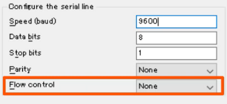 - user EXEC > vs privileged EXEC #
- enable password cmd > password to turn on enable
- running-config: current, active config file on device, edited real-time using CLI
- startup-config: file loaded upon startup.
- to save running as startup, write/write memory/running-config startup-config
- encrypts existing pwds in config: service password-encryption
- more secure, ALWAYS-encrypted: use enable secret
- if both enable password (7) and enable secret (CMD5) config, enable password ignored
- REMEMBER conf t to configure
Days 5-6
- PDUs:
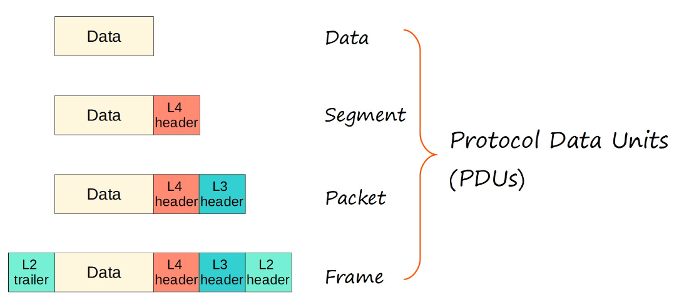 - Ethernet frame:
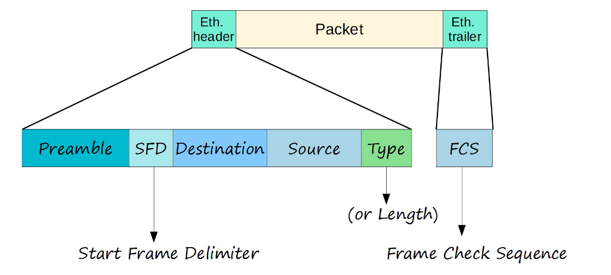
- preamble: 7 bytes, alt 1/0, syncs receiver clocks
- SFD (start frame delimiter): 1 byte, end of preamble
- destination/source 6 bytes long
- Type (>=1536, IPv4/v6)/Length (<=1500).
- ethernet types: IPv4 0x0800, IPv6 0x86DD
- FCS (frame check sequence): checks for corruptions with CRC
- length 7-1-6-6-2-4. 26 bytes total
- OUI is first half of MAC address
- ARP (address resolution protocol): request is broadcast, reply is unicast
- ethernet type 0x0806
- ping consists of ICMP echo request/reply, measures round-trip time
- clear MAC address tables w/ clear mac address-table etc. as needed
Days 7-8
- IPv4 address classes:
class A: /8 255.0.0.0
class B: /16 255.255.0.0
class C: /24 255.255.255.0
class D: multicast addresses
class E: reserved (experimental)
127 range reserved for loopback addresses
(testing network stack, pinging 127 pings itself)
BROADCAST IP: host portion all 1s (.255) (=broadcast MAC all Fs) - 2^n - 2 usable addresses per network
- show ip interface brief
- status: layer 1 status. default ‘administratively down’ for Cisco routers (switches: NOT admin down)
- protocol: layer 2 status.
- ip add using LAST AVAILABLE address in network
- enable interface with no shutdown
Day 9
- duplex: int can send/receive at same time? full: yes. half: no. default is auto-full (negotiate w neighbors and full if possible)
- devices attached to switches can use full duplex!
- show interface status
Days 10-11
- ip route [dest-prefix] [mask] [next-hop router]
- show ip route
- adding ip addresses on routers: add ip addresses of INTERFACES
Day 12
- life of packet:
- end host learns MAC of DG via ARP
- host encapsulates packet with Ethernet header containing DG MAC
- router decapsulates, learns MAC of next-hop via ARP, encapsulates appropriately, forwards (repeat until reach PC4)
Days 13-15
- Classless Inter-Domain Routing (CIDR) limits IP addressing waste
- subnetting:
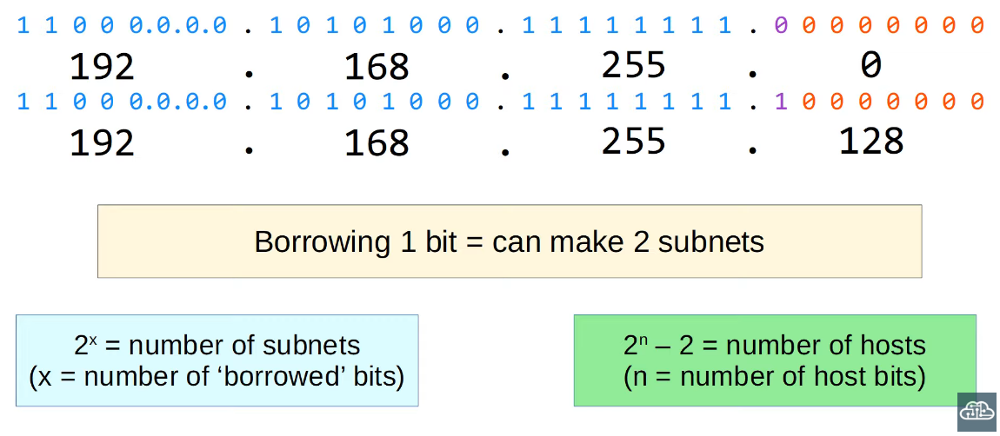 - Variable Length Subnet Masks (VLSM): creating subnets of different sizes
- assign subnets from largest to subnets
- when connecting two hosts, use /30 not /31
- Day 16
- broadcast domain: all devices which receive/forward a broadcast frame sent by any device within domain. routers do not forward, and therefore set boundaries for the domain
- even different subnets (Layer 3) can be in the same broadcast domain (Layer 2)
- VLANs divide domain at Layer 2
- show vlan brief
- switchport belonging to single VLAN: access port
- switchport belonging to multiple VLANs: trunk port
- int range g0/0-3 > switchport mode access > switchport access vlan 10
- config VLANs on routers: config DG IP to int
-
Day 17
- frames sent through trunk links are ‘tagged’ (802.1Q, ISL old)
- 802.1Q consists of TPID 0x8100, PCP (CoS), DEI (Drop Eligible Indicator), VLAN ID (VID, 1-4094, 0 and 4095 reserved)
- frames belonging to native VLANs are untagged (default VLAN 1, but can be manually configured)
- access ports are untagged ports
- switchport mode trunk
- if switch also supports ISL, switchport trunk encapsulation dot1q then switchport mode trunk
- show interfaces trunk to verify
- edit VLANs connected to trunk: switchport trunk allowed vlan ?
- switchport trunk native vlan [#]
- Router on a Stick (ROAS) divides single int into sub-ints, to allow inter-VLAN routing
- config: e.g. int g0/0.10 > encapsulation dot1q 10 > ip add [last usable, subnet]
- remember to config trunk port TO ROUTER as well
Day 18
- config native VLAN on router:
- encapsulation dot1q [vlan-id] native
- ip add on router int (int g0/0 > ip add)
- layer 3 (multilayer) switches can switch and route. uses switch virtual interfaces (SVIs) for inter-VLAN routing
- for packets destined outside LAN, can configure default route to separate router connected to Internet
- default interface g0/0 (set int to default config)
- DO NOT FORGET ip routing, no switchport ON MLS
- config default route: ip route 0.0.0.0 0.0.0.0 [ip]
- creating SVIs: config just like routers, but on MLS (int > ip add > no sh)
Day 19
- DTP (dynamic trunking protocol): dynamically configures access or trunk, not recommended for security purposes
- dynamic desirable configured ports will ACTIVELY form trunk links, i.e. with other trunk, dynamic auto or dynamic desirable ports (older switches default)
- dynamic auto ports will form trunk links with other trunk and dynamic desirable ports (newer switches default)
- disable with switchport nonegotiate (access mode also disables)
- favors ISL over 802.1Q
- VTP (VLAN trunking protocol): allows config VLANs on central server switch, avoids manual config large networks with several VLANs
- three modes: server (modify, store in NVRAM, edit revision # - used to sync, advertise latest VTP version on trunks, function as clients), client (sync, advertise, store in NVRAM - only in v3!!), transparent (no sync, separate database, no advertising, fwds VTP ads within same domain)
- vtp mode [mode]
Day 20
- redundancy is important, but can cause broadcast storms (repeatedly flooded broadcast messages) and MAC address flapping (devices constantly relearning MAC addresses)
- solution is Spanning Tree Protocol (STP): redundant ports in default blocking state until active port fails
- STP devices send Hello BPDU messages; if device receives msg, then active. if not, failed.
- BPDU has bridge ID field; lowest BID is root bridge
- all ports on root bridge in forwarding state. all other switches must have path to root bridge
- all ints on root bridge are designated ports, in forwarding state. all other ports assign root port (least root cost), also in forwarding state.
(only calculate cost of outgoing int)
(root bridge ints have cost of 0)
(least root cost > lowest BID > lowest NEIGHBOR port ID) - switch assumes root bridge at startup, until receives BPDU with lower BID
- once topology converges, only root bridge generates BPDUs
- Cisco PVST runs STP instance for each VLAN (BID = priority + VLAN ID unique for each VLAN)
- int connected to root port always designated
- verify with show spanning-tree
Day 21
- two more STP states: listening and learning (transitional)
- only designated and root ports enter listening state (15 seconds long by default). only forwards BPDUs, not normal traffic; does NOT learn new MAC addresses.
- after listening state, enters learning state (15 s long by default). only forwards BPDUs, not normal traffic; DOES learn new MAC addresses.
- STP timers:
- Hello timer: freq of Hello BPDUs (2 s)
- forward delay: length of listening/learning (15 s)
- max age: wait time before changing topology (20s, 10x Hello)
- PVST+ uses dest. MAC 0100.0ccc.cccd for BPDUs
- regular STP uses dest. MAC 0180.c200.0000
- optional STP features:
- Portfast: bypass listening/learning, enter forwarding state immediately ONLY when connecting to end hosts
- spanning-tree portfast default
- BPDU Guard: int shuts down after receiving BPDU to prevent loops
- spanning-tree bpduguard enable
- Root Guard: does not accept superior BPDUs, disables int
- Loop Guard: does not start forwarding even if receives no BPDUs. disables int
- config:
- spanning-tree mode ?
- set root bridge: spanning-tree vlan 1 root primary
- sets STP priority to 24576, or (current lowest)-4096
- set secondary root bridge: “ “ “ “ “ secondary
- sets STP priority to 28672
- can use different connections for different VLANs (different roots per VLAN) = STP load-balancing
- can also manually config cost and port-priority
- spanning-tree vlan 1 ?
Day 22
- Rapid STP (RSTP): allows faster forwarding state
- expanded costs for faster speeds:
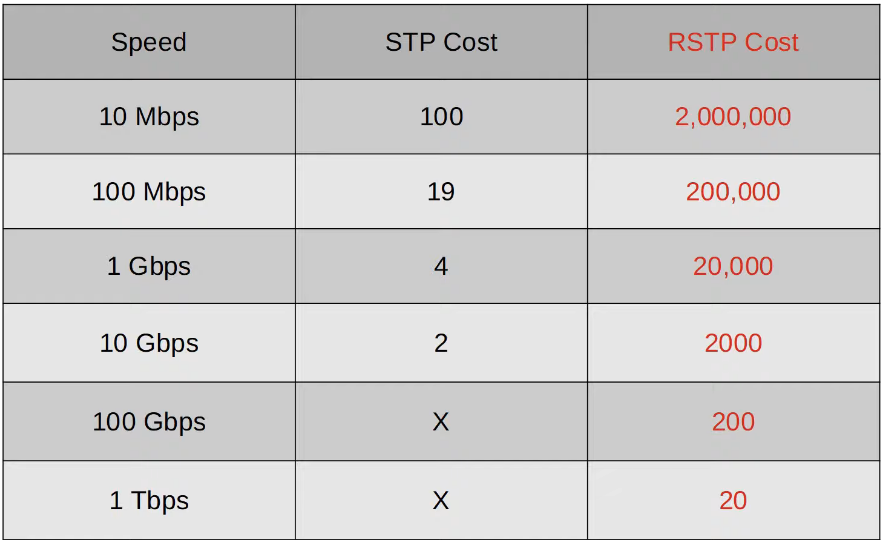 - non-designated ports in RSTP are either alternate or backup
- alternate receives superior BPDUs. if root port fails, best alt immediately moved to forwarding (similar to classic STP’s UplinkFast).
- backup receives superior BPDUs from another interface on the same switch (only happens when connected via hubs, usually rare)
- RSTP link types:
- edge: connected to end host. moves directly to forwarding (like PortFast)
- even ints connected to hubs are EDGE ports if hubs connected to end hosts.
- point to point: two switches
- shared: connection to hub. must operate in half-duplex
Day 23
- EtherChannel groups multiple interfaces as a single int, STP treats as single int
- load-balancing: frames in same flow (i.e. same two devices communicating) will use same physical interface
- which interface? based on one of the following:
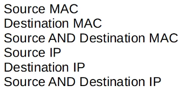 - verify: show etherchannel load-balance
- config: port-channel load-balance ?
- three methods:
- Cisco PAgP (dynamic)
- IEEE 802.3ad LACP (dynamic)
- static
- config: int range > channel-group [#] mode ?
- note:
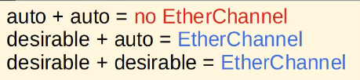 - static: ONLY on+on create EtherChannel
- channel-group # needs to match on same switch, but not with other switch
- manually config protocol with channel-protocol ?
- verify: show etherchannel summary
- Layer 3 EtherChannels (connecting MLSs) use routed ports, no need for STP.
- config: int range > no switchport > channel-group 1 mode ?
Day 24
- dynamic routing: advertise routes, add superior routes to table
- divided into two types: Interior Gateway Protocol (IGP, within autonomous system [AS]) and Exterior Gateway Protocol (EGP, between ASs)
- 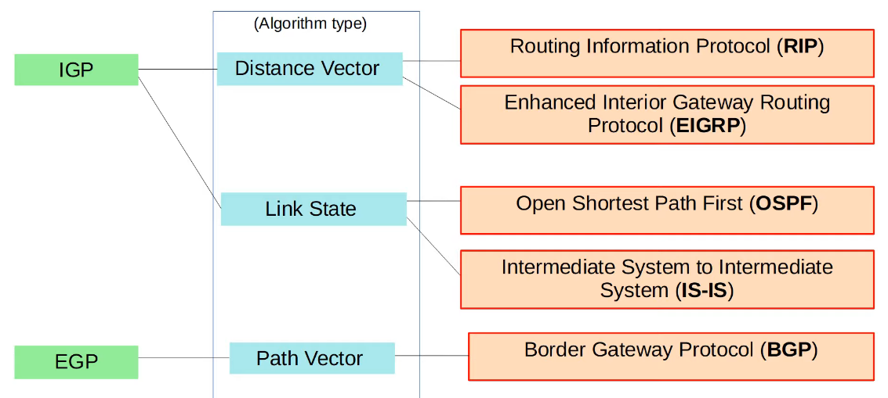
- distance vector: ‘routing by rumor’ - router only knows information neighbors tell it (“distance” i.e. metric, “vector” i.e. direction, next-hop)
- link state: every router aware of entire topology. uses more resources. faster reactions to network changes
- lower metric = superior. if same metric: both added to table, traffic load-balanced over both. (Equal Cost Multi-Path, ECMP)
- in routing table: e.g. [110/2] is admin distance / metric
- different IGPs use different metrics.
- metric compares routes learned using same protocol; AD compares protocols
- Cisco AD values:
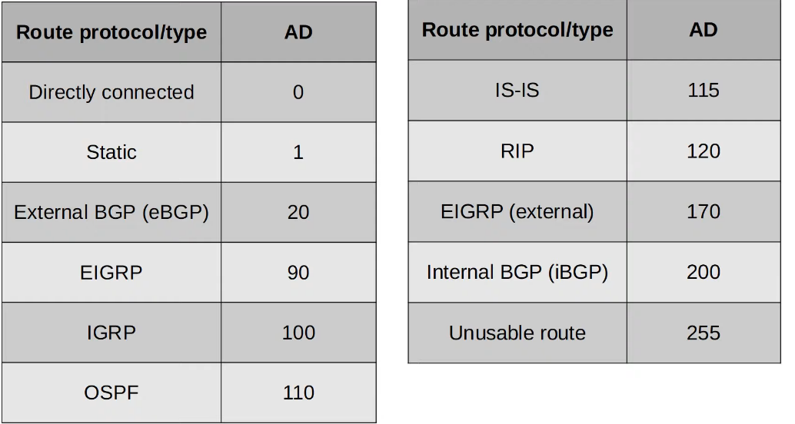 - floating static route: static route AD changed to be less preferred than dynamic routes
- config: ip route, added metric parameter at end - set higher than dynamically learned route AD
Day 25
- Routing Information Protocol (RIP) - industry standard
- metric is hop count (max 15, one router = one hop regardless of bandwidth)
- v1 only advertises classful addresses w/ no mask info, no VLSM/CIDR support. broadcasts to 255.255.255.255
- v2 supports VLSM/CIDR. ads with mask info. multicasts to 224.0.0.9
(multicast = delivered to devices in multicast group) - router rip > version 2 > no auto-summary > network [ip]
- network commands assume classful; e.g. 10.0.0.0 assumed /8, 172.16.0.0 assumed /16. router finds matching ints and advertises actual classless network address (e.g. 172.16.1.0/28)
- ints with no RIP neighbors should be config as passive (no RIP ads)
- (config-router) passive-interface g2/0
- ad default route: default-information originate
- verify routing protocols: show ip protocols
- Enhanced Interior Gateway Routing Protocol (EIGRP) - Cisco, since opened
- faster reactions to network changes
- no 15 hop-count limit
- multicast address 224.0.0.10
- can perform unequal-cost load balancing
- router eigrp 1 > no auto-summary > passive-int > network
- AS # must match between routers!
- can specify WILDCARD mask in network, else assumes classful
- wildcard masks are inverted subnet masks
- for each octet: 255-x
- in order for EIGRP to be activated on int:
- create loopback int: int loopback [#], then config IP on int
- enable EIGRP ALL devices: network 0.0.0.0 255.255.255.255
- EIGRP metric (simpl.) = slowest link bandwidth + ALL links delay
- feasible distance: router’s metric to dst
- reported distance: neighbor’s metric to dst
- in routing table: [FD / RD]
- successor: route w/ lowest metric
- feasible successor: RD > successor FD
- config unequal-cost load balancing with variance ?
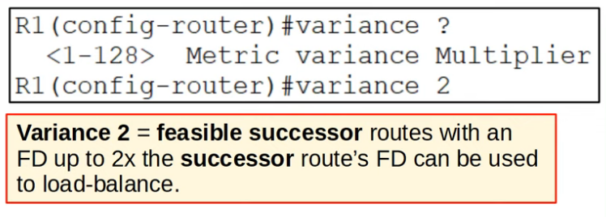Day 26
- OSPF: routers routinely flood link-state ads (LSAs), which comprise a shared LS database (LSDB)
- become neighbors > exchange LSAs > calculate best routes
- divide network into OSPF areas (each connected to single backbone area, each have unique LSDBs)
- internal routers: all ints within same area.
- area border routers (ABRs): ints in multiple areas. ABRS maintain separate LSDBs for each area. max 2 areas rec.
- OSPF area rules:
- must be contiguous (all of each area must be interconnected)
- at least 1 ABR connected to backbone
- OSPF ints in same subnet must be in same area
- router ospf [process-id] > network [ip, subnet] [OSPF AREA]
- process-id is only LOCALLY significant
- must specify ospf area at end of network
- passive-int and default-info originate same as RIP
- determining router ID:
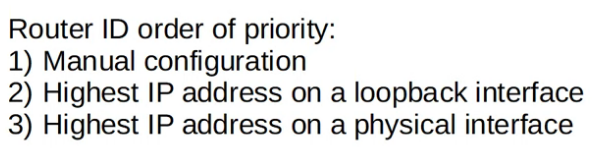 - man config: router-id ? > clear ip ospf process
- show ip ospf database
Day 27
- OSPF metric is cost: divide reference bandwidth by int bandwidth
- default ref band is 100 mbps
- all cost values <1 converted to 1
- modify:
- change ref band: auto-cost reference-bandwidth [#]
- config ref band greater than current fastest links, allow for upgrade
- man config cost itself: (config-if) ip ospf cost ?
- change int band: does not change int operation speed, but affects metric calculations
- cost to dst is total cost of OUTGOING ints
- loopback cost 1
- router sends OSPF hello msgs through OSPF ints
- default hello timer 10s
- multicast to 224.0.0.5
- encapsulated in IP header, protocol field 89
- OSPF neighbor states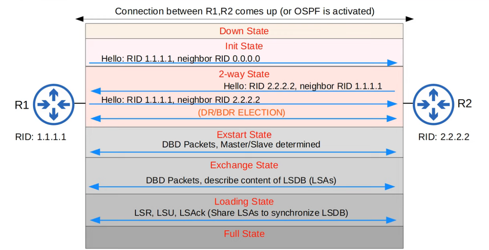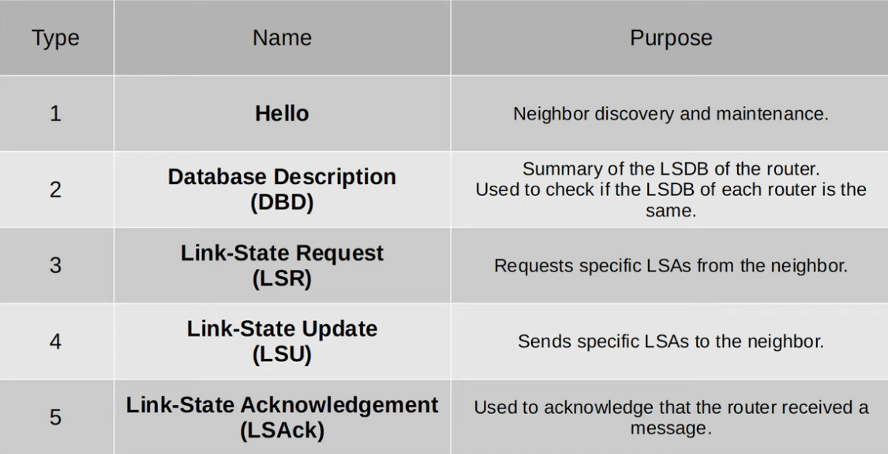
- show ip ospf neighbor
- show ip ospf interface
- activate OSPF directly on int: int > ip ospf [pro-id] area [#]
- config ALL ints as passive: passive-int default
- config specific ints as active: no passive-int ?
Day 28
- loopback int: virtual int not dependent on physical int. provides consistent IP used to identify router
- OSPF network types:
- broadcast (Ethernet and FDDI default enabled)
- DR/BDR election (per subnet): int priority > RID
- default int priority is 1 on all ints
- neither DR/BDR = DROther
- config int priority: int > ip ospf priority ?
- BDR becomes DR if DR goes down
- DROthers don’t form full adjacencies with other Others
- DROthers only form adjacencies with DR/BDR
- reduces LSAs sent/received, i.e. congestion / unnecessary traffic
- show ip ospf int brief
- point-to-point (PPP and HDLC default enabled)
- for serial ints (old tech); no need for DR/BDR
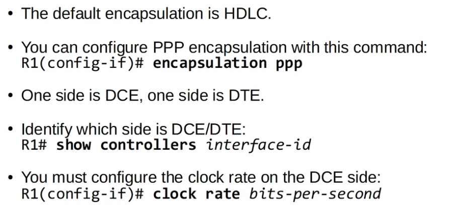
- non-broadcast (frame relay, X.25 default enabled)
- OSPF neighbor requirements:
- area # must match
- ints in same subnet
- OSPF process not shutdown
- unique RIDs
- hello = dead timer
- ip ospf hello-interval ?
- ip ospf dead-interval ?
- return to defaults: no “ “ “
- auth settings must match (matching OSPF passwords)
- int > ip ospf authentication-key ?
- IP MTU settings must match: ip mtu ?
- OSPF network type must match
- int > no ip ospf network ?
- LSA types
- Type 1 (Router LSA): identifies router and attached networks
- Type 2 (Network LSA): generated by DRs. lists routers attached to ‘multi-access’ (broadcast) networks
- Type 3 (AS-External LSA): generated by ASBRs. routes outside AS
Day 29
- First Hop Redundancy Protocol (FHRP): another router takes over as DG in event of failure
- both ACTIVE and STANDBY routers have the same virtual IP address, which is configured as DG. (virtual MAC also generated)
- when DG router fails, backup broadcasts gratuitous ARP to force switches to update MAC address tables
- types of FHRPs:
- Hot Standby Router Protocol (HSRP) - Cisco
- elects active and standby
- multicast address:
- v1: 224.0.0.2
- v2: 224.0.0.102
- virtual MAC:
- v1: 0000.0c07.acXX
- v2: 0000.0c9f.fXXX
- Xs = HSRP group number
- if multiple subnets/VLANs, can configure multiple active routers.
- SUBNETS divide at L3, VLANs divide at L2.
- config: int > standby [#] ip ? > standby [#] priority ? > standby [#] preempt
- active router determined by
highest priority > highest IP - config VIRTUAL IP
- preempt: force active router
- verify: show standby
- Virtual Router Redundancy Protocol (VRRP) - open standard
- elects master and backup
- multicast: 224.0.0.18
- virtual MAC: 0000. 5e00.01XX
- Gateway Load Balancing Protocol (GLBP) - Cisco
- load balances among multiple routers within single subnet
- elects single AVG (active virtual gateway) and <=4 AVFs (active virtual forwarders)
- multicast: 224.0.0.102
- virtual MAC: 0007.b400.XXYY
- Xs = GLBP group #, Ys = AVF #
Day 30
- OSI Layer 4: transparent data transfer between end hosts, provide services to applications, provide L4 addressing (“port” numbers, which identify application-layer protocols and provide session multiplexing)
- port numbers:
- well-known: 0-1023
- registered: 1024-49151
- ephemeral/private/dynamic: 49152-65535
- TCP: (downloads, file-sharing, etc)
- connection-oriented: establish connection before data transfer
- reliable communication: segment acknowledgement required
- sequencing: data sent in correct order
- flow control (via window size)
- UDP does none of the above
- establishing connection: 1SYN > 2SYN/ACK > 1ACK
- terminating connection: 1FIN > 2ACK > 2FIN > 1ACK
- forward acknowledgement: 2ACK = 1SEQ + 1, ACK# is # of next segment host expects to receive
- UDP: (VoIP, live video, etc)
- data sent with no ACK, sequencing, reliability, connection required
Day 31
- IPv6 config:
- ipv6 unicast-routing > int > ipv6 address ? > no sh
- verify: sh ipv6 int br
Day 32
- IPv6 address types:
- modified EUI-64: converting MAC to 64-bit int ID > host portion of IPv6
- divide MAC address in half
- insert FFFE in middle
- invert 7th bit -
MAC address
0: universally administered address (UAA)
1: locally administered address (LAA)
(reverse for IPv6) - int > ipv6 address [#] eui-64
- global unicast: public, globally unique, Internet use
- XXXX:XXXX:XXXX:YYYY:ZZZZ:ZZZZ:ZZZZ:ZZZZ
- X = global routing prefix, assigned by ISP.
- Y = subnet ID
- Z = int ID, “host portion”
- unique local: private, not globally unique (except global ID), internal network use
- FDXX:XXXX:XXXX:YYYY:ZZZZ:ZZZZ:ZZZZ:ZZZZ
- global ID randomly generated, not ISP assigned
- link local: auto-gen, used for comm. within subnet. not used for packet routing
- FE8?:????:etc.
- int > ipv6 enable
- OSPFv3, static next-hops, NDP (“IPv6 ARP”)
- multicast
- FF00::/8
- IPv6 does not use broadcast, has no broadcast address
- IPv6 and v4 have matching endings for multicast adds:
- e.g. all nodes: FF02::1, 224.0.0.1
- multicast scopes:
- interface-local - device
- link-local - subnet
- site-local - physical location
- organization-local - org/enterprise
- global - no limits
- anycast: multiple routers config same IPv6. packets forwarded to closest router. specify global unicast/unique local address as anycast in CLI:
- int > ipv6 address [#] anycast
- unspecified: ::. default routes config to ::/0
(IPv4 0.0.0.0) - loopback: ::1
Day 33
- IPv4 header length is variable; IPv6 fixed
- Neighbor Discovery Protocol (NDP)
- replaces ARP; uses ICMPv6 and IPv6 solicited-node multicast addresses to learn new MACs
- Neighbor Solicitation (NS) - ICMPv6 Type 135
(sim. ARP Request) - Neighbor Advertisement (NA) - ICMPv6 Type 136
(sim. ARP Reply) - IPv6 solicited-node multicast address
(calculated from unicast):
ff02::1:ff + last 6 hex digits of unicast address
- NS uses solicited-node multicast to generate dst IP/MAC fields
- show ipv6 neighbor
- NDP also allows automatic discovery:
- Router Solicitation (RS) - ICMPv6 Type 133
- sent to FF02::2 (all routers) whenever int enabled / host connects to network
- asks all routers to identify themselves
- Router Advertisement (RA) - ICMPv6 Type 134
- sent to FF02::1 (all nodes) in response to RS and also periodically
- announces router presence, provides basic info
- “Any routers?” / “Yes, I’m a router, about me:”
- Stateless Address Auto-configuration (SLAAC)
- hosts learn IPv6 prefix using RS/RA messages, then auto-gens int ID using EUI-64/random gen
- ipv6 address autoconfig
- Duplicate Address Detection (DAD) checks for devices using same IPv6
- sends NS to own IPv6; no reply, no duplicates
- config route as backup path: change AD
- ipv6 route . . . [AD]
Day 34
- Access Control Lists (ACLs)
- ACLs must be built to meet a specific requirement
- ACLs configured globally on router as ordered sequence of Access Control Entries (ACEs) (see diagram)
- ACL must be applied inbound/outbound to an interface in order to take effect. fulfillment of requirements dependent on in/out and interface
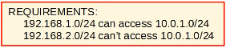
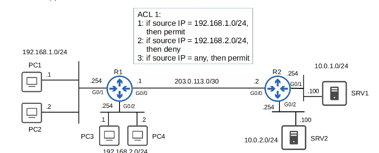
- if G0/2 OUT, PC3/PC4 can connect with SRV1 etc. unchecked, failing requirements
- if G0/2 IN, PC3/PC4 denied, cannot access any other network – too restrictive.
- if G0/1 OUT, PC3/PC4 blocked from accessing SRV1, but can still communicate with other networks. meets requirements, not excessively restrictive
- max 1 ACL can be applied to a single interface per direction (1 IN, 1 OUT)
- if packet doesn’t match any entry in ACL, implicit deny
- there is an implicit deny at the end of all ACLs
- standard ACLs should be applied as close to dest. as possible
- Standard ACLs (match based on source IP only)
- Standard numbered ACLs
- identified with number (e.g. ACL 1, ACL 2, etc.)
- different types of ACLs have different range of numbers that can be used
- configure:
#access-list [number] {deny | permit} [ip] [wildcard-mask][1] – assumes /32
e.g.:
#access-list 1 deny 1.1.1.1 0.0.0.0
= #access-list 1 deny 1.1.1.1
= #access-list 1 deny host 1.1.1.1
#access-list 1 permit any – negates implicit deny
= #access-list 1 permit 0.0.0.0 255.255.255.255
#interface g0/2
#ip access-group 1 out – config G0/2 OUT
- Standard named ACLs
- identified with a name e.g. ‘BLOCK_BOB’
- ranges: 1-99, 1300-1399
- config:
enter ‘standard named ACL config mode,’ then config each entry
#ip access-list standard [acl-name]
[entry-number] {deny | permit} [ip] [wildcard-mask] - advantages:
- easily delete individual ACL entries with no sequence-number
- insert new entries in between other entries
- editing ACLs
- resequencing:
#ip access-list resequence [acl-id] [starting-seq-num] [increment]
- e.g. #ip access-list resequence 1 10 10 would change entries 1, 2, 3, 4, 5 to 10, 20, 30, 40, 50
Day 36
- Layer 2 discovery protocols:
- Cisco Discovery Protocol
- multicast MAC 0100.0CCC.CCCC
- devices receiving CDP messages process and discard, not forward
- sent every 60 seconds, holdtime 180 seconds
- config:
- CDP globally enabled by default, but if necessary:
(no) cdp run - config timer/holdtime: cdp ?
- verify:
- show cdp / show cdp traffic / show cdp int
- CDP neighbor table: show cdp neighbor
- Link Layer Discovery Protocol (industry standard)
- default disabled on Cisco devices
- multicast MAC 0180.C200.000E
- sent every 30 seconds, holdtime 120 seconds
- reinitialization delay 2 seconds (delays LLDP init)
- config:
- globally: lldp run
- int: int > lldp transmit/receive
- lldp timer/holdtime/reinit ?
- sim. verify: show lldp ?
Day 37
- NTP syncs hardware time to global server
- manual time config: clock set / calendar set ?
- manual timezone config: clock timezone ?
- (DST: clock summer-time recurring ?)
- NTP hierarchy: stratum 0 (ref clocks) to 15 max.
- str 1: primary. >1: secondary
- NTP servers can also peer to provide more accurate time
- config time server: ntp server ?
- best to config multiple servers for reliability
- show ntp associations to verify
- device synced to NTP server becomes NTP client, acts as NTP server itself
- ntp update-calendar to update calendar to NTP time
- no NTP server?
- make device NTP server with ntp master
- symmetric active mode (become peers): ntp peer ?
- can also config auth (optional):
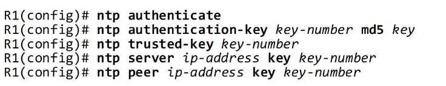
Day 38
- Domain Name System (DNS) typically uses UDP, but TCP > 512 bytes
- Cisco routers can be config as DNS servers or clients
- config as server:
- ip dns server
- build address mappings: ip host ?
- config DNS server to query if requested record not in host table: ip name-server ?
- perform DNS queries (default enabled):
ip domain lookup
Day 39
- Dynamic Host Configuration Protocol (DHCP) allows client devices to automatically learn aspects of network config without manual config
- servers use UDP port 67, clients port 68
- DHCP DORA (Discover-Offer-Request-Ack)
- Discover: broadcast to find DHCP servers, if any; requests previously used IP address if available
- Offer: DHCP server offers IP address etc.
- Request: accepts offer (useful if multiple servers send Offer)
- Ack: accepts request
- config as server:
- create DHCP pool (range of assignable addresses):
ip dhcp pool ? - network [#] [mask/prefix length]
- dns-server ?
- domain-name ?
- default-router ?
- specify lease time: lease infinite or lease [d h m]
- config as relay agent:
- int > ip helper-address ?
- config as client:
- int > ip add dhcp
Day 40
- Simple Network Management Protocol (SNMP) used to monitor device status, make config changes, etc.
- two main types of devices: managed devices, Network Management Station (NMS, “SNMP server”)
- operations:
- managed devices can notify NMS of events
- NMS can ask managed devices for info about status
- NMS can tell managed devices to change config
- components:
- NMS
- SNMP Manager interacts with devices
- SNMP Application acts as user interface
- managed devices
- SNMP Agent interacts with NMS
- Management Information Base (MIB) stores variables managed by SNMP, each identified by an Object ID (OID)
- versions
- v1 is the original
- v2c allowed NMS to handle large amts of info per request (‘c’ = community string pwds)
- v3 allows encryption and authentication
- messages: Read (Get, GetNext, GetBulk), Write (Set), Notification (Trap, Inform), Response (Response)
Day 41
- syslog (ind std) used to log events
- format:
seq:timestamp: %facility-severity-MNEMONIC:description
- severity levels:
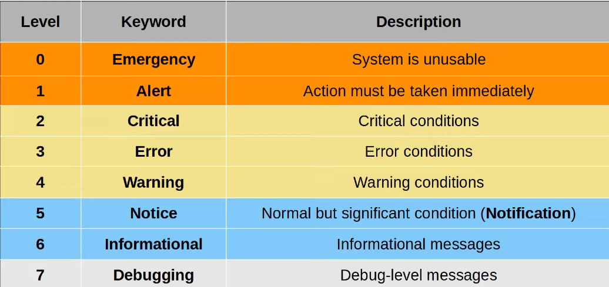
Every Awesome Cisco Engineer Will Need ISE Daily
- syslog logging locations
- console line (when connected via console port)
- VTY lines (when connected via Telnet/SSH. default disabled)
Buffer (saved to RAM)
- external server (UDP port 514)
- config
- log to console line: logging console [level]
- can use level # or keyword
- logging console 6 enables logging for 6 and higher
- log to VTY: logging monitor [level]
- log to buffer: logging buffered [size] [level]
- size in bytes
- log to ext server:
logging [server-ip] / logging host [server-ip]
logging trap [level] - use terminal monitor to enable display syslog every time you connect via Telnet/SSH
Day 42
- config password on console line:
line console 0 > password ? > login - config username+pw:
username ? secret ? > line console 0 > login local - switches not IP-aware, but can be assigned management IPs to allow remote connections:
int vlan1 > ip add > no sh > ip default-gateway - Telnet
- for remotely accessing CLI, largely replaced by SSH
- sends plaintext data
- TCP port 23
- config: enable secret/password ? > opt. config ACL > line vty 0 15 > login local > transport input telnet > opt. apply ACL to VTY lines
- Secure Shell (SSH) replaced Telnet
- TCP port 22
- show version > “K9” in IOS image name means supports SSH
- config
- config hostname
- generate RSA public/private key pair:
ip domain name ? > crypto key generate rsa modulus [length, >768 for 2] - config VTY lines: sim to Telnet but only login local allowed, transport input ssh, disable Telnet afterwards (SSH only)
- connect via terminal:
ssh -l [user] [ip] or ssh [user]@[ip]
Day 43
- FTP vs. TFTP
- FTP control sends commands and replies
- FTP data connections have two modes: active and passive
- active mode - server initiates connection
- passive mode - device (behind firewall) inits connection
- view file systems of Cisco IOS device with show file systems
- upgrading Cisco IOS with FTP/TFTP
- show version / show flash
- TFTP:
copy [source] [destination] then enter TFTP server IP, file name on server, name to be saved as on flash - as prompted.
conf t > boot system [filepath] – if not specified, router will use first IOS file found in flash
write memory > reload > show version – verify new version
delete [filepath] – delete old - FTP:
ip ftp username ? > ip ftp password ? > same as TFTP
Day 44
- private IPv4 addresses:
- “Class A” 10.0.0.0/8 (10.0.0.0 - 10.255.255.255)
- “Class B” 172.16.0.0/12 (172.16.0.0 - 172.31.255.255)
- “Class C” 192.168.0.0/16 (192.168.0.0 - 192.168.255.255)
- Network Address Translation (NAT) allows hosts with private IPs to connect with other hosts over the Internet
- static NAT translates between inside local and inside global
- outside local and outside global are the same unless using dst NAT
- source NAT translates source IP address
- static NAT allows manual one-to-one mappings of private to public (doesn’t help preserve IP addresses)
- config:
- define inside and outside interfaces:
int > nat inside/outside - config one-to-one mappings:
ip nat inside source static [inside-local] [inside-global] - verify: show ip nat translations
- clear: clear ip nat translation *
- dynamic NAT allows router to auto map inside local to inside global as needed
- ACLs can be used to identify which traffic should be translated (source IPs denied by ACL will not be translated, but will not be dropped)
- NAT pool defines available inside global adds (e.g. if packet permitted, translate src IP to add from pool)
- mappings are still one-to-one (can cause NAT pool exhaustion, after which packets dropped)
- entries auto timeout, or manually cleared
- config:
- int > ip nat inside/outside
- define traffic to be translated:
access-list 1 permit ? - define pool:
ip nat pool ? [first-ip] [last-ip] prefix-length ? - checks if both addresses in same subnet - map ACL to pool:
ip nat inside source list 1 pool POOL1
- verify: show ip nat translations/statistics
- PAT (NAT overload) translates IP + port #
- allows multiple hosts to use single public IP.
- router keeps track of which inside local is using which inside global and port #
- config:
- same as dynamic NAT, but ip nat pool ? [first-ip] [last-ip prefix-length] ? overload
Day 52
- common terminologies:
- star: all devices connect to central
- full-mesh: all devices interconnected
- partial-mesh: some devices interconnected
- two-tier: core/distribution (interconnects access, Internet, WAN), access (QoS, security, PoE)
- three-tier: core (layer 3, fast transport), distribution, access.
for large LANs >3 dist. layers - spine-leaf: two-tier, every spine connects to every leaf. allows load-balancing, consistent latency, prevents bottlenecks.
- small office home office (SOHO): all networking functions (routing, switching, etc) typically provided by single device
Day 53
- WANs connect large geographical areas
- topology: sites connect to central SP via leased line (serial)/Ethernet (fiber), which comms with Data Center
- Ethernet WAN preferred over leased line due to cost
- Multi Protocol Label Switching (MPLS): labels allow creation of VPNs over infrastructure, to separate traffic per consumer
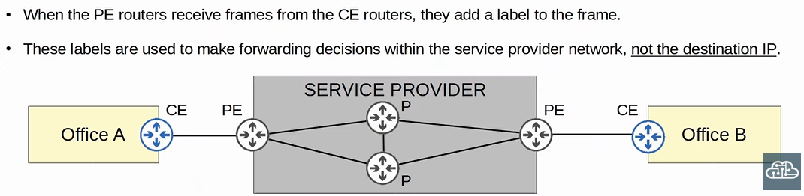
- Customer Edge (CE) router does not use MPLS. PE/P routers are completely transparent; CE routers will act as if directly interconnected
- Provider Edge (PE) router
- Provider core (P) router
- modems
- modems convert data to be suitable over phone lines
- cable modems sim. for CATV lines
- modems can be separate or built-in to home router
- redundant internet connections
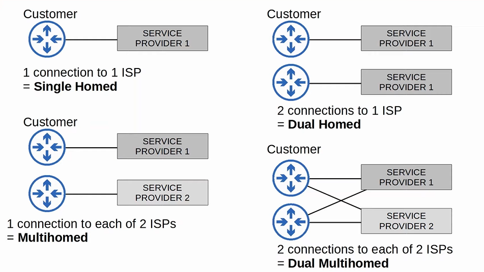 - VPNs
- IPsec tunnel (encrypt, encapsulate, send, decrypt)
- unicast! for multicast: use GRE over IPSec
- full-mesh: use Dynamic Multipoint VPN (DMVPN): configure hub-and-spoke VPN tunnels, then hub auto configs full-mesh
- remote-access via TLS: VPN client installed on end devices, config on firewall
Day 55
- wireless network issues:
- lack of privacy - all devices in range receive all frames
- CSMA/CA avoids collisions, waits for channel available before transmitting data
- comms regulated by various national/international bodies
- must consider coverage area (signal disturbed via absorption,reflection, refraction, scattering)
- other devices using same channel can cause interference
- Wi-Fi uses two main bands of radio frequency (RF):
- 2.4 GHz (further reach, but more interference)
- 5 GHz (divides into four smaller bands)
- bands divide into channels. for WLANs with multiple APs, must avoid overlapping channels:
- 2.4 GHz: 1, 6, 11 rec. (in North America)
- 5 GHz consists of non-overlapping channels
- 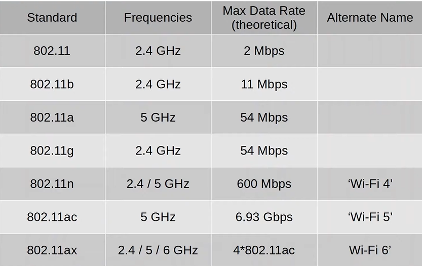
- three main types of 802.11 service sets:
- independent (e.g. IBSS/ad hoc): devices interconnected without AP. used for file transfer; not scalable.
- infrastructure (e.g. BSS): clients in a Basic Service Area (BSA) connected via AP, not directly. BSSID (MAC address of AP radio) uniquely identifies AP.
- multiple BSSs together form Extended Service Set (ESS). roaming: clients can move between APs/BSSs without manually reconnecting. BSSs overlap 10-15%.
- mesh (e.g. MBSS):
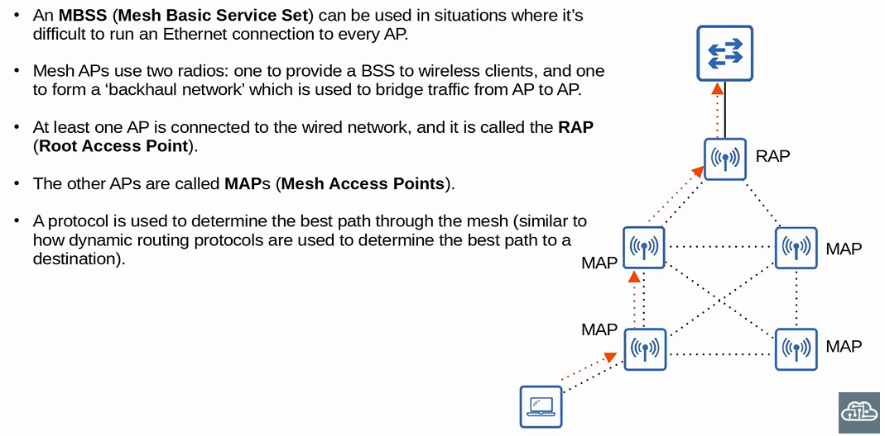
- usually, wireless networks connected to upstream wired Distribution System (DS) via VLAN.
- WLANs are each mapped to separate VLANs, and connected to network via trunk
- additional AP operational modes
- repeater: extends BSS range. two radios (receive, retransmit)
- workgroup bridge (WGB): wireless client of AP. connects wired devices to WLAN
(uWGB allows one device. Cisco WGB allows multiple) - outdoor bridge: wireless connect over long distances, via antenna. p2p or p2mp.
Day 56
- 802.11 frame format:
- frame control: message type/subtype
- duration/ID: time dedicated to frame transmission, connection ID
- addresses: DA, SA, RA, TA
- sequence control: reassembles fragments, elims duplicates
- QoS control: used for traffic prioritization
- High Throughput (HT) control: added in 802.11n (HT WiFi)
- 802.11ac is Very HT (VHT) WiFi
- Frame Check Sequence (FCS): used to check for errors
- station must be authenticated and associated with AP to send traffic thru AP.
- scan for BSS
(active: probe request/response;
passive: listen for beacons from AP) - auth request/response (auth O assoc X)
- association request/response (autho O assoc O)
- 802.11 message types:
- management (beacons, probe/auth/assoc req/resp)
- control (controls access to medium, delivers mgmt e.g. RTS, CTS, ACK)
- data
- AP deployment methods:
- autonomous: self-contained, indep. config, no WLC.
- connect to wired network via trunk link
- VLANs must stretch across entire network
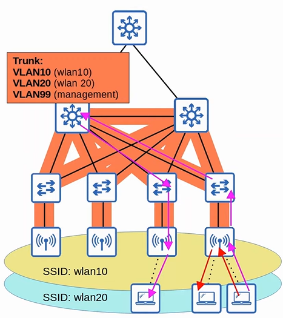 - preferable for smaller networks
- lightweight (split-MAC) architecture: functions split between LWAP and WLC.
- LWAP handles ‘real-time’ operations: encrypting, decrypting, transmitting, receiving, sending beacons/probes, etc.
- WLC handles mgmt/auth; centrally configures LWAPs.
- LWAP/WLC auth each other using digital certs; only auth APs can join network
- LWAP/WLC comm using CAPWAP tunnels
- LWAP modes:
- local: default, offers BSS for clients
- FlexConnect: locally switches traffic if WLC down
- sniffer: no BSS offers. listens/captures traffic
- monitor: no BSS offers. receives frames to detect rogue devices; deauths rogue devices if found
- rogue detector: listens to traffic on wired network. receives list of suspected rogue devices, correlates with ARP messages
- Spectrum Expert Connect (SE-Connect): conducts RF spectrum analysis, sends to software e.g. Cisco SE
- bridge/mesh: dedicated bridge between sites, e.g. over long distances. mesh between APs.
- flex+bridge: adds FlexConnect func to bridge/mesh
- WLC deployments:
- unified: central hardware (6000 APs)
- cloud-based: VM running on server (3000 APs)
- embedded: integrated in switch (200 APs)
- mobility express: integrated in AP (100 APs)
- cloud-based: between autonomous and split-MAC (e.g. Cisco Meraki)
- only mgmt/control traffic sent to cloud
- regular traffic sent directly
Day 57
- authentication, encryption, integrity
- auth methods:
- open auth (public WiFi)
- WEP (shared-key, easily cracked)
- EAP (802.1X). consists of supplicant (wants to access), authenticator (provides access), auth server (AS, permits/denies access) entities.
- Cisco LEAP: user, pw, mutual auth with dynamic WEP keys
- Cisco EAP-FAST: server inits PAC provisioning, establish TLS tunnel, auth inside tunnel
- PEAP: server sends digi cert (not PAC), establish TLS tunnel, auth inside tunnel
- EAP-TLS: both send digi cert, establish TLS, auth inside
- encryption + integrity methods
- TKIP
- more secure software for WEP hardware
- MIC protects integrity, incl. sender MAC address
- WPA
- CCMP
- more secure than TKIP. must be supported by hardware
- AES counter mode for encryption
- CBC-MAC for MIC
- WPA2
- GCMP
- more secure than CCMP.
- AES counter mode for encryption
- GMAC for MIC
- WPA3
- WiFi Protected Access (WPA) has two modes: personal (uses PSK), enterprise (uses ext. server e.g. RADIUS. supports all EAP)
- WPA3 has additional security measures e.g. Protected Mgmt Frames (PMF), Simult. Auth of Equals (SAE, protects four-way handshake), forward secrecy (prevents decryption after transmission)
Day 58
- DHCP option 43 helps APs finds WLCs in a network, not necessary unless AP/WLC in diff subnets
- get used to WLC GUI - remember to enable WLANs in General
Day 59
- review:
- network functions can be divided into:
- data (forwarding) plane: all tasks related to forwarding/receiving data traffic (de/encap, forwarding, filtering)
- e.g. NAT, ACLs, port security
- control plane: controls what data plane does, performs overhead work
- e.g. routing table, MAC table, ARP table, STP, etc.
- mgmt plane: config, i.e. overhead operations that don’t directly influence forwarding
- Telnet/SSH, Syslog, SNMP, NTP
- CPU handles control, mgmt. app-specific integrated circuit (ASIC) used for data. MAC address table (CAM table) stored in TCAM.
- software-defined networking (SDN) centralizes control plane to controller (e.g. WLC). controllers interact with devices using APIs.
- centralized controller communicates with and learns about devices using southbound interface (SBI), which consists of comm protocols and APIs (APIs facilitate data exchanges between programs)
- SBIs e.g. OpenFlow, Cisco OpFlex, Cisco onePK, NETCONF
- devices interact with controller and analyze/config network via northbound interface (NBI)
- data sent in structured format via JSON/XML

- can also automate traditional networks via Python, RegEx; SDNs however facilitate automation functions
Day 60
- data serialization converts data to standard format
- JavaScript Object Notation (JSON): stores and transmits data objects using human-readable text
- JSON objects are unordered lists of key-value pairs, surrounded by {}
- Extensible Markup Language (XML) used for data serialization; less human-readable
- <key>value</key>
- YAML Ain’t Markup Language (YAML) used in Ansible. whitespace is significant. (insig in JSON/XML)
Day 61
- Application Programming Interfaces (APIs) allow two applications to communicate with each other
- in SDN architecture:
- NBI - REST APIs
- SBI - NETCONF, RESTCONF
- REST (Representational State Transfer) APIs perform CRUD (create, read, update, delete) operations, typically using HTTP/HTTPS
- create (POST) new variables
- read (GET) variable values
- update (PUT/PATCH) variable values
- delete (DELETE) variables
- HTTP Request for data include HTTP verb + URI of req. resource in header
- URI format:

- can also include additional headers, e.g. Accept (accepted data types)
- HTTP Response includes code indicating class:
- 1xx informational (req received)
- 2xx successful (req accepted)
- 3xx redirection
- 4xx client error (e.g. 404 Not Found)
- 5xx server error
- REST API (RESTful) architecture has six constraints:
- uniform int
- client-server: client and server are independent; client requests data from server using API calls (HTTP requests)
- stateless: each API exchange is a new, separate event. if auth required, must auth every time
- cacheable/non-cacheable: must support caching (storing). not all resources need to be cached, but cacheable resources must be declared
- layered system
- code-on-demand (optional)
Day 62
- SDN layers:
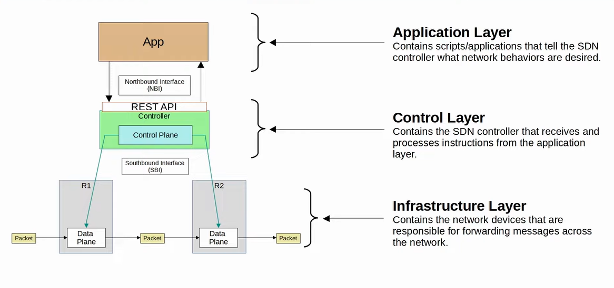 - Cisco SD-Access solution for automating campus LANs, with Cisco DNA Center controller
- underlay: underlying physical network of devices providing IP connectivity
- three different roles:
- edge nodes connect to end hosts
- border nodes connect to devices outside domain
- control nodes perform ctrl plane functions using Locator ID Separation Protocol (LISP)
- can add SD-Access to existing compatible networks (brownfield deployment). DNA Center won’t configure underlay
- greenfield deployment will be configured by DNA Center.
- uses IS-IS to share routing info, no STP/FHRP needed
- overlay: virtual network built on top of underlay
- LISP provides control plane
- Cisco TrustSec (CTS) provides policy control
- VXLAN provides data plane
- fabric: underlay + overlay
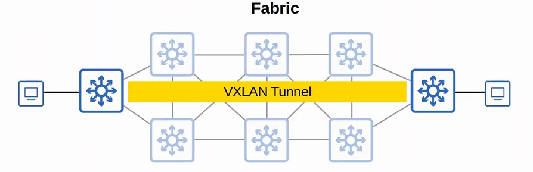 - DNA Center acts as controller and network manager (for non-SDA devices)
- intent-based networking (IBN): engineer communicates intent of config, and DNA Center handles the details
Day 63
- config management tools (e.g. Ansible, Puppet, Chef) can quickly generate new configs for devices on mass scale, by combining templates with variables. can also perform said configs, and check compliance with defined standards.
- Ansible (Red Hat)
- written in Python
- agentless (no special software required), uses SSH
- push model: connects to devices and pushes config changes, via SSH port (22)
- must create text files after installing:
- playbook (i.e. blueprints, YAML)
- inventory (INI, YAML, or other)
- templates (Jinja2)
- variables (YAML)
- Puppet
- written in Ruby
- agent-based: requires special software installation
- can be run agentless via proxy agent
- pull model: clients pull configs from Puppet master (server) via TCP 8140
- uses proprietary language
- req. text files:
- manifest (desired config state)
- templates
- Chef
- written in Ruby
- agent-based
- pull model, TCP 10002
- files use domain specific language (DSL) based on Ruby
- req text files:
- resources (ingredients)
- recipes
- cookbooks (set of related recipes)
- run-list (ordered list of recipes to run to bring devices to desired config state)